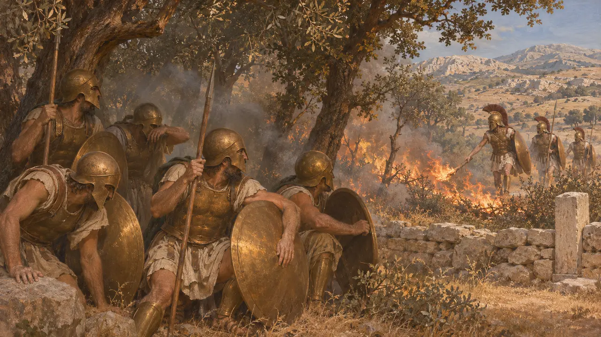
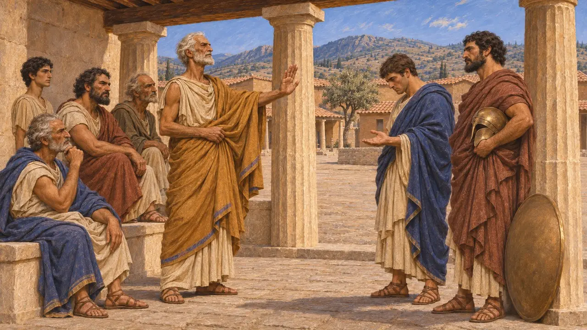
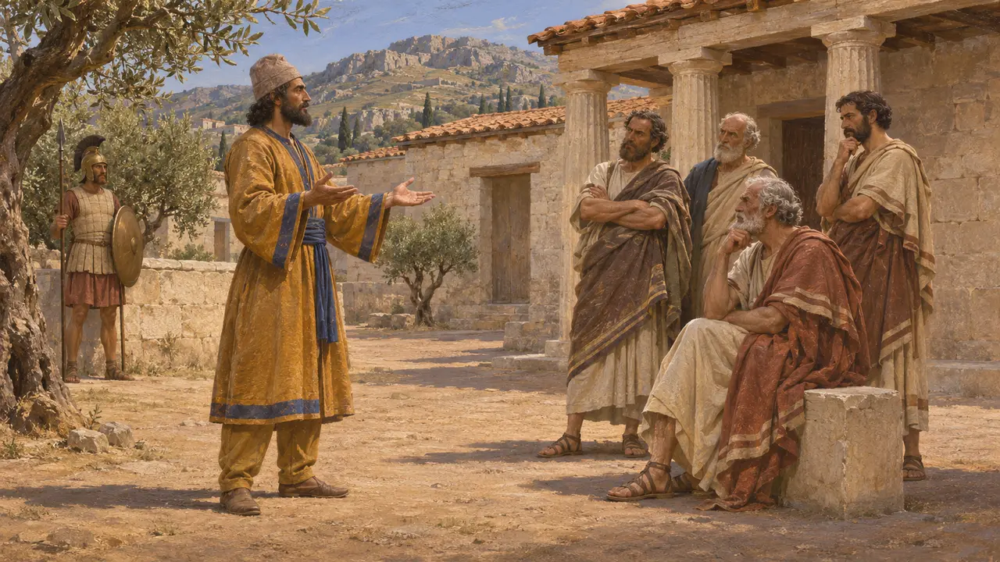
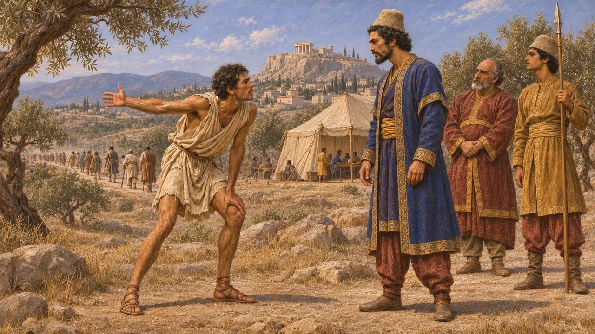
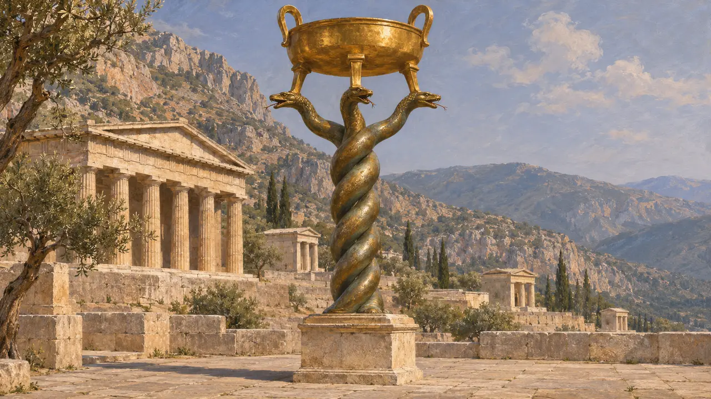
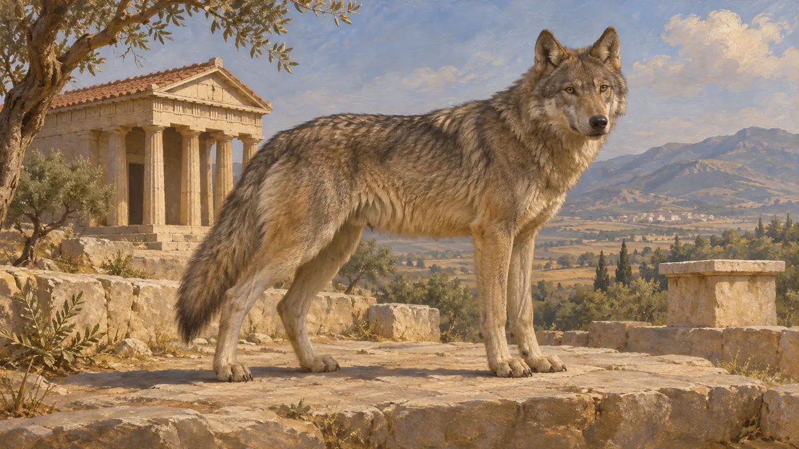

The Argives
Citizens of Argos in the Peloponnese, rivals of Sparta, neutral in 480 BCE
In the game: Level 10: The Hot Gates
The Argives were the people of Argos, an old and powerful city in the north-east Peloponnese and Sparta's chief rival there. Weakened by a heavy defeat at Spartan hands in about 494 BCE, they refused to join the Greek alliance against Xerxes in 480 BCE. Greek writers suspected them of friendship with Persia, and Herodotus reports Persian efforts to keep them out of the war.
In the game: The game makes Argos a trade partner. Its neutrality in 480 BCE is historical, but no source records Argos as a Persian trading partner; the trade role is the game's own simplification.

A rival of Sparta
Ancient accountArgos long disputed the leadership of the Peloponnese with Sparta. Herodotus tells of a fight between three hundred champions from each side over the border land of Thyrea in the time of Croesus, which ended in Spartan control of the district. In about 494 BCE the Spartan king Cleomenes defeated the Argives at Sepeia and burned many who had fled into a sacred grove. Herodotus puts the Argive dead at six thousand.
Herodotus 1.82; 6.76-80; 7.148

Neutral in 480 BCE
Ancient accountAllied Greek envoys asked Argos to join against Xerxes. By the Argives' own account, as Herodotus reports it, Delphi had advised them to stay out, but they still set two conditions: a thirty-year truce with Sparta and an equal share of the command. Sparta offered their king only one vote beside its own two kings, and the Argives refused. Argos sent no troops to Thermopylae, Salamis or Plataea.
Herodotus 7.148-149

Kinship with Persia and suspicion of medism
DisputedHerodotus gives a rival version in which Xerxes sent a herald claiming that the Persians descended from Perses, son of the Argive hero Perseus, and asking Argos to stay at home. He also mentions Argive envoys at Susa years later asking Artaxerxes whether their friendship with Xerxes still held. Herodotus says he must report what is told without being bound to believe it, and historians still debate how far Argos really dealt with Persia.
Herodotus 7.150-152

A message to Mardonius
Ancient accountIn 479 BCE, Herodotus says, the Argives had promised Mardonius that they would stop the Spartan army from leaving the Peloponnese. When the Spartans marched out anyway, the Argives sent their fastest runner to Attica to tell him they could not prevent it. Mardonius then withdrew from Athens towards Boeotia, where the battle of Plataea was fought.
Herodotus 9.12-13

Absent from the victors' monument
In the recordThe bronze Serpent Column was dedicated at Delphi after Plataea and now stands in Istanbul. It lists the Greek communities that fought the Persians. Argos does not appear on it, while its small neighbours Mycenae and Tiryns do. The inscription confirms from the time itself what Herodotus reports about Argive neutrality.
R. Meiggs and D. Lewis, A Selection of Greek Historical Inscriptions, 1969, no. 27

The emblem beside its name
In the recordArgos's emblem in the game is a wolf, for Apollo Lykeios, the wolf-god of the city's great temple, as on Argive coins of about 490 BCE with a large letter A. Argos stayed out of the war of 480 BCE.
Pausanias 2.19.3-4; Head, Historia Numorum, Argolis
Sources
- Herodotus 7.148-152
- Herodotus 6.76-83
- Herodotus 9.12-13
- R. Meiggs and D. Lewis, A Selection of Greek Historical Inscriptions, 1969
- R. A. Tomlinson, Argos and the Argolid, 1972
- P. Briant, From Cyrus to Alexander, 2002